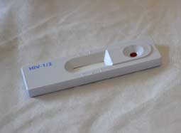
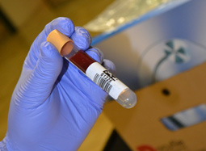
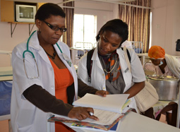

ShareCompartir
ShareCompartir
CDC started work in South Africa in 1989, helping partners address HIV. In 1994, CDC began to collaborate with the government to conduct epidemiology training, develop national health goals and objectives, develop national HIV clinical, ethical, and research guidelines, and support HIV and TB programs.
Download Overview Fact Sheet

 Staff
Staff
CDC office (physical presence)
18 US Assignees
61 Locally Employed
 South Africa at a Glance
South Africa at a Glance
Population: 55,041,000
Per capita income: $12,700
Life expectancy at birth women/men: 63/59 yrs
Under 5 mortality: 34/1000 live births
Source: Population Reference Bureau 2014: South Africa
 Top 10 Causes of Death
Top 10 Causes of Death
- Tuberculosis 8%
- Influenza and pneumonia 5.2%
- HIV 5.1%
- Cerebrovascular diseases 4.9%
- Diabetes mellitus 4.8%
- Other forms of heart disease 4.6%
- Hypertensive Heart Disease 3.7%
- Intestinal infectious diseases 3.4%
- Other viral diseases 3%
- Chronic lower respiratory diseases 2.6%
Why We're Here
HIV/AIDS is one of the main challenges facing South Africa, with one of the highest numbers of infected adults and children in the world.
Where We Work
CDC works with approximately 55 prime partners and 200 sub-partners in all nine of South Africa’s provinces and with the national, provincial, and district health departments.
What CDC Is Doing
CDC works with partners to improve the country's public health foundation, prevent HIV, provide HIV care, and strengthen lab capacity.
Who We Are
Our Stories
-
DREAMS Event Features Guest Speaker Oprah Winfrey
U.S. Ambassador Patrick Gaspard hosted an audience of young South African women on Friday for what may be a once-in-a-lifetime opportunity to meet global media leader and philanthropist Oprah Winfrey. Ms. Winfrey, who is in South Africa celebrating the sixth graduating class ...
Posted December 3, 2016 -
Empowering young women to have #BigDREAMS
"DREAMS isn't just about fighting HIV - it's about giving young women control of their lives," said U.S. Ambassador to South Africa, Patrick Gaspard, on opening the DREAMS Ambassadors Leadership Camp (DALC) on Saturday, 10 September 2016, at the Intundla Lodge, Dinokeng, Gauteng, South Africa...
October 11, 2016 -
TB2016: Where to from here?
As a Public Health Specialist and Tuberculosis (TB) Lead for the Centers for Disease Control and Prevention (CDC) South Africa, when I got the go ahead to attend TB2016, a two-day conference dedicated exclusively to this infectious disease immediately preceding the International AIDS Conference...
September 20, 2016
In the News
- Page last reviewed: January 27, 2017
- Page last updated: January 27, 2017
- Content source:
Global Health
Notice: Linking to a non-federal site does not constitute an endorsement by HHS, CDC or any of its employees of the sponsors or the information and products presented on the site.